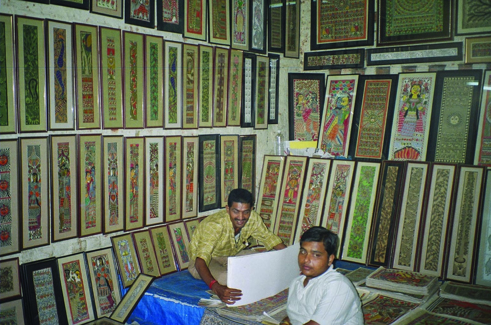
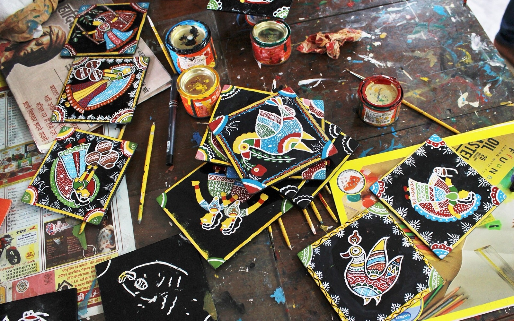
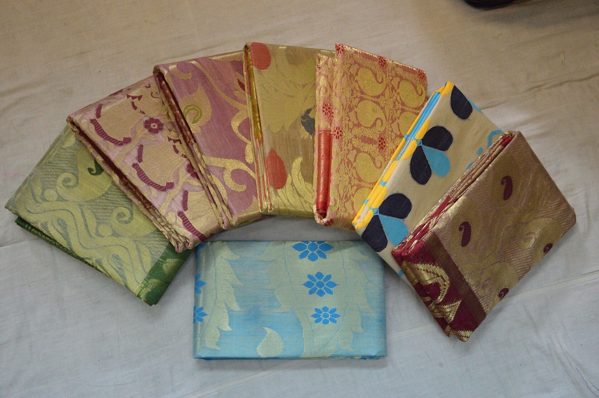
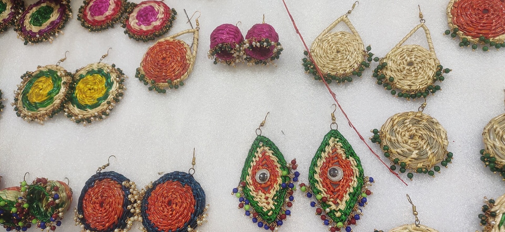

Madhubani painting
Mithila painting from north Bihar, known worldwide for its line work, nature motifs, and GI-tagged craft villages.
Handmade arts that you can watch, learn, and take home — from Mithila painting to Patna's Tikuli work.
Handmade arts that you can watch, learn, and take home — from Mithila painting to Patna's Tikuli work.

Mithila painting from north Bihar, known worldwide for its line work, nature motifs, and GI-tagged craft villages.

A Patna handicraft of decorating lac discs, historically used as bindis, still practised in the city.

Tussar silk weaving from Bhagalpur, close to the Vikramshila heritage landscape.

Embroidery and grass crafts from Mithila and beyond, often sold around pilgrimage towns.